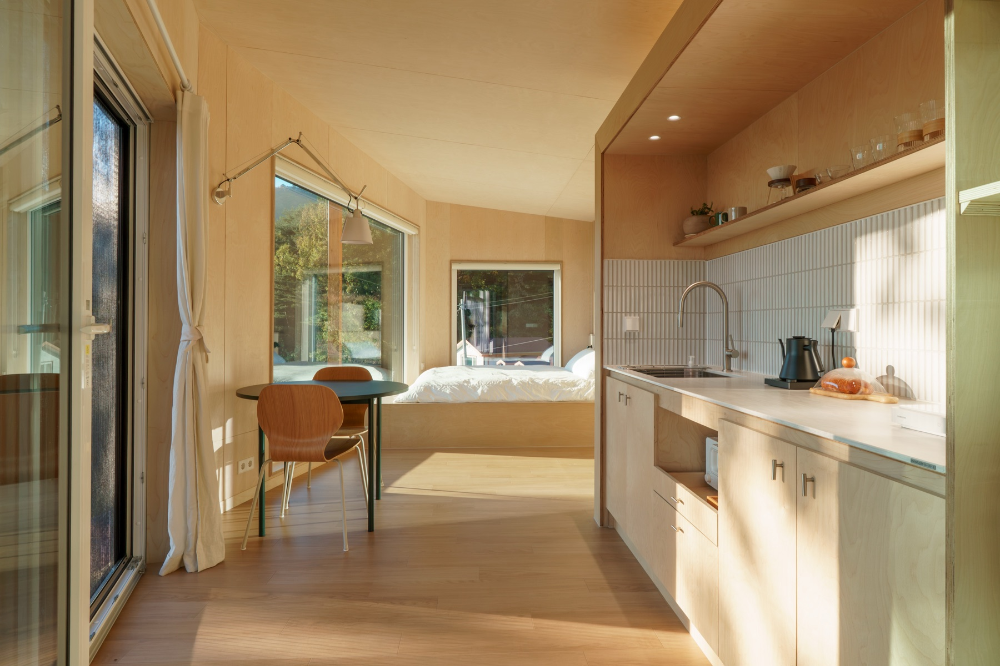

STAY
공간
하루 한 팀 · 2인 숙소
한 팀만 머무는 원룸형 독채입니다.
두 분이어도, 혼자여도 좋습니다.
침실 창이 두 개라
누워서도 산이 보입니다.


- 독채
- 원룸형 목조 독채
- 인원
- 하루 한 팀 · 2인
- 침대
- 퀸사이즈 1개
- 욕실
- 샤워 (욕조 없음)
- 주방
- 냉장고 · 전자레인지 · 전기드립포트 · 토스터 · 인덕션 (오븐·가스레인지 없음)
- 냉난방
- 에어컨 · 전기온돌
- 그 밖에
- 와이파이 · 블루투스 스피커 · 마당 주차 1대 (실내 절대 금연)
- 바비큐
- 처마 밑 웨버 가스그릴 (3~10월, 테라스 불가)
- 체크인 · 체크아웃
- 체크인 오후 3시 30분, 체크아웃 오전 11시 30분
- 반려견
- 소형견 1마리, 숙박일수와 상관없이 30,000원.
예약 전에 견종과 성별을 꼭 알려주세요.
강아지 전용 침대와 전용 식기, 패드 2장을 준비해 두었습니다.
침대에는 올라갈 수 없습니다.
실내에서 수컷은 매너벨트 착용이 필수이며, 암컷도 마킹을 하는 경우 기저귀 착용을 부탁드립니다.